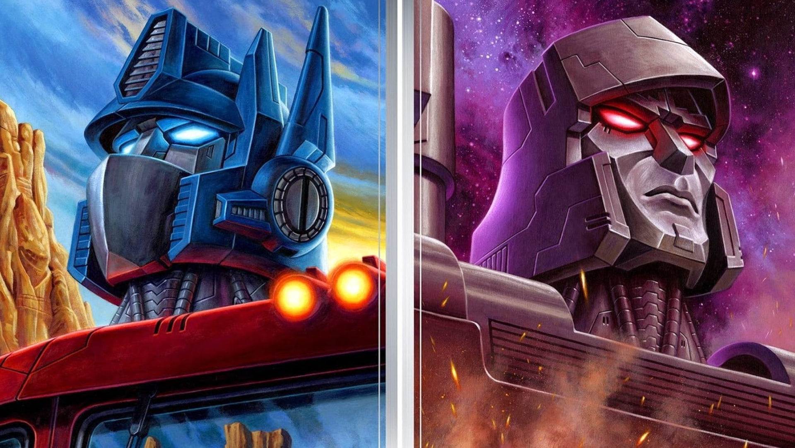

OPTIMUS PRIME

Optimus Prime é o impressionante líder das forças Autobots. Altruísta e infinitamente corajoso, ele é o oposto completo de seu inimigo mortal, Megatron. Originalmente um mero civil conhecido como Orion Pax ou Optronix, ele foi escolhido pela Matriz de Liderança para comandar, o primeiro de uma série de pesados fardos que ele foi forçado a carregar. Outro fardo é o de trazer o conflito dos Transformers para a Terra. Cada baixa, humana ou Cybertroniana, pesa profundamente em sua centelha. Ele não mostra esse lado para seus soldados e nunca sucumbe ao desespero. Os Autobots precisam de um líder decisivo e carismático, e é isso que ele lhes oferece. Foi essa liderança que virou o jogo na Grande Guerra.
No campo de batalha, há poucos que rivalizam com a destreza de Optimus Prime. Ele é facilmente o mais forte de qualquer Autobot de seu tamanho. Quando em equipe com seu Deck de Combate e o drone Roller, seu blaster de íons e seu machado de energon são armas mortais. Ele sacrificaria sua vida para proteger seus colegas Autobots ou aqueles sob sua proteção, e o faz regularmente. Sua compaixão por outros seres sencientes é sua única verdadeira fraqueza, e os Decepticons têm se aproveitado disso repetidamente... embora também seja a fonte de sua força!